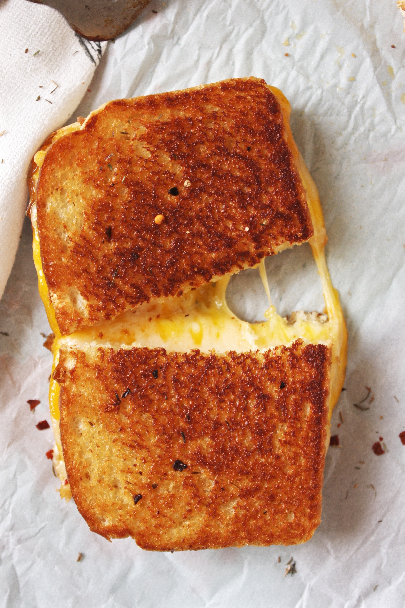

Awesome Grilled Cheese Sandwich

Description
My husband and I were sick of frying grilled cheeses on the stove because you have so many pieces of bread to use, and you have to stand there for a long time if you feed up to six people like we do. So we came up with this idea.
Ingredients
- 18 slices Bread
- 4 tablespoons Butter
- 9 slices chedder cheese
Steps
- Preheat oven to 450 degrees F (230 degrees C).
- Butter one side of 9 slices of bread, and place butter-side down on a baking sheet. Arrange cheese on each slice of bread. Spread butter on 9 remaining slices of bread, and place them buttered-side up on top of the cheese.
- Bake in preheated oven for 6 to 8 minutes. Flip the sandwiches, and bake an additional 6 to 8 minutes, or until golden brown.